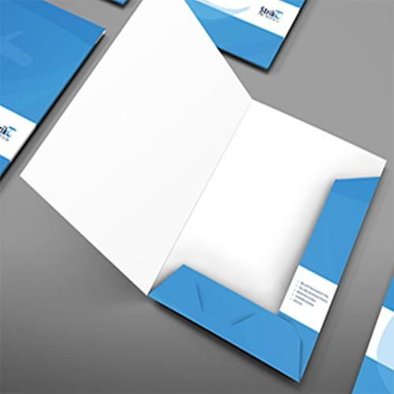

Stansen
Wat is Stansen?
Stansen is een techniek waarbij een vorm uit een vel materiaal, zoals papier of karton, wordt gesneden met behulp van een stansmes. Deze techniek wordt vaak gebruikt om specifieke vormen of patronen uit te snijden, zoals verpakkingen, labels, en kaarten.
Voordelen van Stansen
- Precisie: Stansen zorgt voor nauwkeurige en consistente sneden, zelfs bij complexe ontwerpen.
- Creativiteit: Met stansen kunnen unieke en op maat gemaakte vormen worden gecreëerd die anders moeilijk te bereiken zijn.
- Efficiëntie: Zodra de stansvorm is gemaakt, kan deze meerdere keren worden gebruikt, wat tijd en kosten bespaart bij grotere oplages.
Toepassingen van Stansen
Stansen wordt veel gebruikt in de volgende sectoren:
- Verpakkingen: Voor het creëren van op maat gemaakte dozen en verpakkingsmateriaal.
- Marketingmateriaal: Voor het maken van folders, kaarten en andere gedrukte materialen met speciale vormen.
- Labels: Voor het snijden van etiketten in specifieke vormen voor producten.
Hoe werkt Stansen?
Bij stansen wordt een speciaal mes, dat in de gewenste vorm is gebogen, gebruikt om het materiaal te snijden. Dit mes wordt op een plaat gemonteerd en met druk op het materiaal aangebracht, waardoor de vorm wordt uitgesneden. Het resulterende stuk kan een op zichzelf staand product zijn of een onderdeel van een grotere productie.
Belangrijke Overwegingen bij Stansen
- Ontwerpcomplexiteit: Houd rekening met de complexiteit van het ontwerp, aangezien zeer gedetailleerde sneden moeilijker uit te voeren kunnen zijn.
- Materiaalkeuze: Niet elk materiaal is geschikt voor stansen; sommige materialen kunnen scheuren of niet schoon gesneden worden.
- Productiekosten: De kosten voor het maken van de stansvorm kunnen hoog zijn, vooral voor unieke ontwerpen. Deze kosten kunnen echter worden terugverdiend bij grotere oplages.